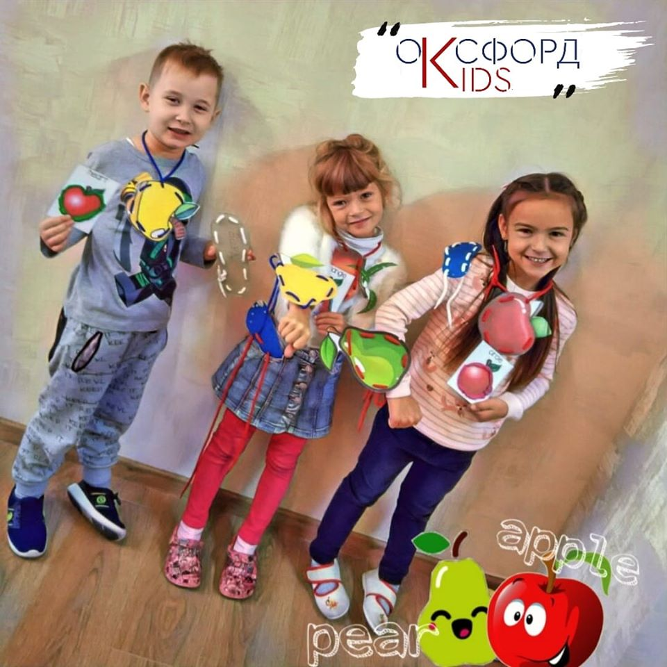

Мини-клуб
Детский клуб Ok’сфорд KIDS в Вишневом предоставляет прекрасную услугу «Мини-клуб». Мини-клуб - это услуга, с помощью которой родители могут оставить своего ребенка на пол дня и без всяких забот заниматься своими взрослыми делами. В детском центре формируются группы по возрасту, чтобы Ваш карапуз мог спокойно развиваться со своими сверстниками. Такой подход позволяет последовательно усваивать информацию и грамотно социализировать детей.
Английский язык, развивающие игры, математика, чтение, музыка, поделки - это незначительная часть того, чем ваш ребенок будет занят в нашем розвивающем центре для детей в г. Вишневое. Ok’сфорд KIDS - это современное образовательное учреждение, которое поможет малышам получить прекрасное образование и провести время весело, а главное с пользой.
Мы открылись относительно недавно, но многие родители стали нашими добрыми и верными друзьями, за что мы очень благодарны.
Услуга «мини-клуб» помогает не только взрослым, а также детям. Они могут полноценно без лишних тревог и стресса адаптироваться к полноценному детскому саду. Общаясь между собой, дети проходят путь становления личности и как результат, становятся уверенными в себе.
Особенно хочется отметить, что преподавательский состав общается с учениками иключительно на английском языке, используя украинский язык в экстренных случаях.
Ok’сфорд KIDS прекрасное место, где мы организовываем веселые приключения для детей. А также, место, где дети сопереживают, делятся эмоциями и весело взрослеют.